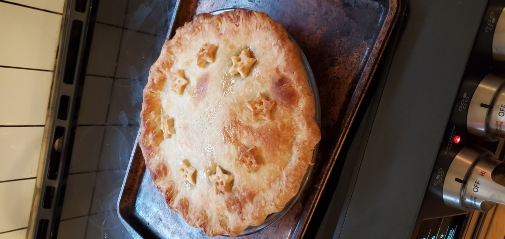

Blackberries
When I was young, I got up early to go out and pick blackberries several times each summer. My mum turned some into jam, but she always froze a pail or two so that she could make me a pie for my birthday. Every year it was sweet and tart and bursting with flavor—exactly what I needed in BC in January when the sky had been gray for weeks and everything felt damp.
Mum died three years ago just a few days before she was going to come to visit us in Toronto. As we were sorting out her home I found two buckets of blackberries in her freezer. I don’t know who picked them for her, but I’d like to think she was planning to smuggle them onto the plane somehow so she could make me a birthday pie.
My wife used the last of them this afternoon. I’m sixty years old; the seeds will get stuck in my teeth and I’ll probably need to wipe my eyes, but it’ll be worth it for just a little taste of those long-ago summers.
